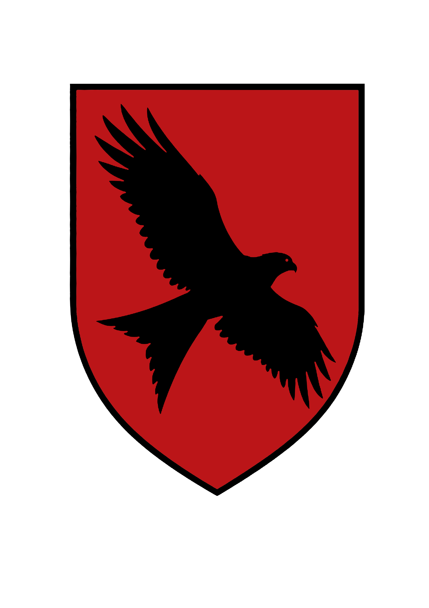

EXPLORE THE WORLD
Mynydd Draig
A school. A home. A world of magic.
Explore the school in the Welsh mountains: its grounds, founders, houses, and the everyday magic within its walls.
Mynydd Draig, the school. Nestled among the mountains of Wales, the magical school of Mynydd Draig is where orphaned Owain Ifans discovers friendship, belonging, and a place to call home. Beyond the comfort of his new home, mysteries threaten the things he loves. This is where you’ll learn more about the school, its people, and the world around it.
A castle of stone and colour
Ancient and vast, Mynydd Draig feels inseparable from the Welsh mountain that holds it. Dark stone forms its walls, threaded with crystals that pulse with a faint inner glow. Above the valley, slender bridges link soaring towers whose highest points disappear into the clouds.
For all its imposing stonework, the school is full of colour. Emerald, gold, and softly shimmering violet mosses spread across its dark slate roofs. Round windows and tall, narrow panes of stained glass scatter the afternoon sunlight over the walls, lending the castle a jewel-like brilliance.
Arriving at Mynydd Draig
A student’s journey begins with a homing key, delivered by a red kite. Place the key into any door, turn it three times, and open it: the doorway becomes a portal to Mynydd Draig.
Students step through and emerge through seven stone arches in a valley outside the school grounds.
Older students help gather trunks and caged animals, ready for the school brownies to collect and carry up to the school. A prefect comes to meet the arrivals, while the older students head to the sorting chamber to wait.
The prefect guides the new first years towards the school, pointing out landmarks around the grounds, sharing advice, and recommending the best places to enjoy a quiet day.
Around the grounds
The Howling Woods
The Howling Woods surround the school, and students are forbidden to enter. Among the students, there is a theory that a gwiber lives within the forest.
Afanc Lake
If you’re lucky, you may catch sight of a herd of ceffyl dŵr at Afanc Lake.
Founders’ Courtyard
An ancient yew tree stands in Founders’ Courtyard, its needles shimmering in emerald, ruby, sapphire, and silver. According to school legend, the founders of Mynydd Draig sorted the school’s first students beneath this very tree.
The legend of the sorting owl
School legend tells that sorting once took place beneath the great yew in Founders’ Courtyard. That changed when Merlin, the first headmaster of Mynydd Draig, carved an owl from a branch of the same tree.
He enchanted the wooden owl with the ability to measure each student’s heart for the values the founders held highest: wisdom, courage, strength, and curiosity.
The four founders
- Gwenllian Goch
- Keeper of the Skies · Courage
- Emrys Derwen
- Custodian of the Forests · Wisdom
- Seren Talar
- Guardian of the Rivers · Curiosity
- Bran ap Idris
- Father of the Mountain · Strength
The four houses
Students are sorted into one of four houses, each named after a founder. The piping on their uniform robes identifies their house.
- Goch
- Named after Gwenllian Goch · Courage
Red robe piping
Goch · Courage - Talar
- Named after Seren Talar · Curiosity
Blue robe piping - Derwen
- Named after Emrys Derwen · Wisdom
Green robe piping - Idris
- Named after Bran ap Idris · Strength
Grey robe piping
Which house calls to you?
Explore courage, curiosity, wisdom, and strength through eight spoiler-free questions inspired by the founders’ values.
A home within the school
Explore the four house common rooms and the Idris dormitory.
Goch common room
Location
Perched high in the tallest tower, the Goch common room offers breathtaking views over the patchwork valleys and distant sea, with windows that catch the sunrise and the flight of red kites.
Entrance
The entrance to the Goch common room is concealed behind a portrait of Gwenllian Goch, the house’s founder.
Décor & Atmosphere
The room is filled with light and movement, its walls painted a warm, sunlit cream with broad banners of crimson red and gold. High, arched windows are framed by velvet drapes embroidered with soaring red kites. The furniture is sturdy and comfortable: oak tables, deep armchairs, and window seats perfect for daydreaming or plotting a daring adventure.
Above the stone fireplace hangs a tapestry of Gwenllian Goch, her hair ablaze, a red kite perched on her arm. The mantel is carved with Celtic knotwork and feathers, and a collection of polished river stones—tokens of students’ courage—rests in a glass bowl.
Magical Touches
Candle sconces shaped like kite feathers cast flickering light, and the fireplace’s flames occasionally leap up in the shape of a bird in flight. If a student is feeling anxious or fearful, the room gently fills with warm sunlight, offering comfort and encouragement.
Derwen common room
Location
Hidden deep within the roots of the school, beneath the ancient yew in the main courtyard, the Derwen common room feels as though it is part of the living earth.
Entrance
The entrance to the Derwen common room is concealed behind a portrait of Emrys Derwen, the house’s founder.
Décor & Atmosphere
The walls are paneled in rich, dark oak, and the ceiling is supported by beams that mimic the spreading branches of a mighty tree. Soft green rugs cover the flagstone floor, and living plants—ferns, moss, and wildflowers—grow in every corner, fed by enchanted shafts of sunlight from above.
A great mural of Emrys Derwen and his stag companion dominates one wall, surrounded by carved wooden stags’ heads and antlers twined with ivy and holly. The furniture is plush and made from natural materials, with armchairs and sofas gathered around a hearth decorated with acorns and stones from the local forest.
Magical Touches
The air always smells fresh and earthy, and the walls hum gently with the songs of the woods. Stag-shaped lanterns glow brighter when someone is reading or deep in thought. The room’s magic encourages peace, patience, and reflection.
Talar common room
Location
Nestled beside the school’s magical river and with windows looking out onto water gardens, the Talar common room is a bright, airy space filled with the sounds of flowing streams.
Entrance
The entrance to the Talar common room is concealed behind a portrait of Seren Talar, the house’s founder.
Décor & Atmosphere
Walls are painted a cool, rippling blue, with mosaics of otters playing along the riverbank. The ceiling is domed and painted with stars and constellations, which twinkle softly at night. Sapphire-blue banners hang from the rafters, and glass baubles dangle from the ceiling, catching the light and throwing rainbows across the room.
Portraits of Seren Talar, always with a playful smile and surrounded by otters, watch over the room. Shelves are crowded with curious magical gadgets, books, and puzzles, encouraging experimentation and delight.
Magical Touches
The common room always sounds like laughter and running water, and the windows can be enchanted to open up into the magical river for an otter’s-eye view. The furniture is rearrangeable at a touch, and the room will occasionally hide riddles for clever students to find. The magical blue flames in the hearth are cool to the touch but always soothing.
Idris common room & dormitory
Location
Carved into the rocky heart of the mountain beneath the school, the Idris common room is accessible only via a winding stone staircase that descends from the Great Hall.
Entrance
The doorway is concealed behind a grand painting of Bran ap Idris, the house’s founder, depicted in his elder years: robed in silver and grey, a black ram by his side, and his hand resting on a gnarled staff. Bran’s eyes follow would-be entrants, and he challenges them with a riddle or question of wisdom and endurance before allowing passage. When the correct answer is given, Bran’s painted self nods approvingly and the stone door swings open.
Décor & Atmosphere
The common room is vast and vaulted, with hewn-stone walls that gleam with veins of silver and quartz. Sturdy stone pillars are carved with spiraling ram’s horns and ancient runes. Tapestries in shades of silver and grey depict dramatic mountain landscapes and the legendary feats of Bran ap Idris.
Fires burn in massive hearths, casting a steady, reassuring glow. Armchairs and benches upholstered in dark wool circle the fireplace, and thick sheepskin rugs cover the cold flagstones. Ram figurines, crafted from black slate, perch on shelves and mantels.
Magical Touches
The air is always cool and crisp, like the mountain air after rain. If a student is struggling, the fire glows a little brighter and the walls gently hum a tune of encouragement. Occasionally, the ram figurines shift slightly, facing the direction of the student who most needs strength. The room fosters resilience, unity, and a deep sense of belonging.
Dorm rooms
The Idris dorm room was a sanctuary carved from the mountain’s heart—a spacious chamber warmed by the glow of enchanted lanterns set into the walls. Six sturdy, dark-oak four-poster beds formed a gentle ring around the perimeter, each bed draped in thick, slate-grey curtains embroidered with silver ram’s horns. Cozy woolen blankets and plush pillows in deep blue and soft cream beckoned the weary.
At the center of the room stood a generous circular desk, carved from polished yew, its surface etched with ancient runes and little grooves where generations of students had idly traced patterns. The desk was scattered with parchment, magical quills, and a few half-finished chess games, offering a communal space for homework, whispered secrets, and late-night laughter.
Overhead, the stone ceiling soared into a graceful dome, crowned by a magical skylight. By day, it bathed the room in natural light, casting shifting sunbeams across the flagstones and illuminating motes of dust that danced like tiny sprites. By night, the glass revealed the swirling constellations and the jagged silhouette of the mountain peaks, so students could fall asleep beneath the stars, lulled by the gentle hush of wind and distant mountain song.
Draigwen Village
A winding mountain path leads from the school to Draigwen, where slate-roofed cottages overlook narrow cobbled lanes. At the beginning of term, students mingle with shopkeepers and market traders among enchanted household goods, magical curiosities, and the welcoming smells of baking and woodsmoke.
Crafanc Aur Books
With golden claw-shaped door handles and a swinging book-shaped sign, Crafanc Aur welcomes readers into a maze of shelves and precarious stacks. School textbooks share space with older volumes, while narrow walkways invite browsing among the scents of leather, ink, and parchment.
The red-kite post
Morning deliveries at Mynydd Draig arrive on the wing. Red kites sweep through the dining hall’s high windows, carrying letters and parcels above the breakfast tables. Their practised deliveries bring a little airborne excitement to the start of the school day.
Learning magic
An education at Mynydd Draig involves curiosity, imagination, and plenty of study. Transmutation explores changes in form and meaning, while herbology brings students into warm greenhouses crowded with magical plants. Textbooks and careful observation matter just as much as a confidently raised wand.
Taking flight
A broom has preferences of its own, and learning to fly means building a partnership with it. Under Professor Woodroofe’s watchful eye, beginners practise on school brooms, discovering that patience and control count for more than impressive stunts—whatever certain enthusiastic students might think.
These introductions keep story discoveries for the books. Any future entries containing spoilers will be clearly marked.